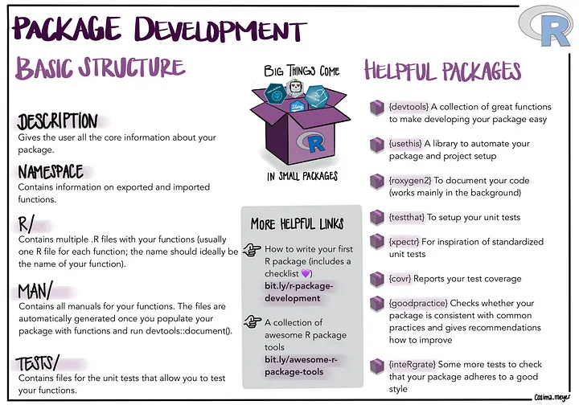

18 Writing Packages
install.packages(c("devtools", "usethis", "roxygen2"))
18.1 Step 1: Create a New Package Structure
Choose a Directory: Decide where you want to create your package on your computer. Create a New Package: In RStudio, go to File > New Project > New Directory > R Package. Enter the name of your package (e.g., myFirstPackage) and the directory location. RStudio will create a new project folder with the basic structure of an R package. Alternatively, you can create a package using usethis:
usethis::create_package("path/to/myFirstPackage")18.2 Step 2: Understand the Package Structure
When the package is created, you'll see a folder structure similar to:
myFirstPackage/ DESCRIPTION: Contains metadata about the package (e.g., title, version, author). NAMESPACE: Controls which functions are exposed to users. R/: Contains your R functions and scripts. man/: Holds documentation files (generated later). Customize the DESCRIPTION File Open the DESCRIPTION file in RStudio and fill in the necessary fields, like:
Package: myFirstPackage
Type: Package
Title: My First R Package
Version: 0.1.0
Author: Philip Leftwich <p.leftwich@uea.ac.uk>
Maintainer: Philip Leftwich <p.leftwich@uea.ac.uk>
Description: Converts significance values into reporting text
License: MIT
Encoding: UTF-8
LazyData: true
18.3 Step 3: Add Functions
Add your R functions to the R/ directory. Create a new .R file (e.g., my_functions.R) and add this function:
report_p <- function(p, digits = 3) {
if (!is.numeric(p)) stop("p must be a number")
if (p <= 0) warning("p-values cannot less 0")
if (p >= 1) warning("p-values cannot be greater than 1")
reported <- if_else(p < 0.001,
"p < 0.001",
paste("p =", round(p, digits)))
return(reported)
}Put your cursor anywhere inside that function and choose Insert Roxygen Skeleton from the Code menu. It should generate documentation code in roxygen format like this:
#' Title
#'
#' @param x
#' @param y
#' @param dv
#' @param level1
#' @param level2
#'
#' @return
#' @export
#'
#' @examples
Define your function:
#' Report p values
#'
#' This function takes a p-value and to a specified number of digits reports as text.
#'
#' @param p numeric value of p
#' @param digits integer value of significant digits
#' @return reported p-values as character strings
#' @export
#' @examples
#' report_p(0.001, 3)
#'
report_p <- function(p, digits = 3) {
if (!is.numeric(p)) stop("p must be a number")
if (p <= 0) warning("p-values cannot less 0")
if (p >= 1) warning("p-values cannot be greater than 1")
reported <- if_else(p < 0.001,
"p < 0.001",
paste("p =", round(p, digits)))
return(reported)
}| Syntax | Description |
|---|---|
| @param | Defines arguments of the function |
| @return | Tells the user what type of object is returned |
| @examples | Add at least one example showing how it works |
| @export | Tells the package you want others to be able to use it, without this the function will only be available internally to your package |
| @import | Tells the package about dependencies "dplyr" your package has, and allows their functions to be called without calling dplyr::
|
18.4 Step 4: Document Your Package
Run the following in your R console to generate the documentation:
devtools::document()This will create the necessary .Rd files in the man/ directory and update the NAMESPACE file.
18.5 Step 5: Check and Build Your Package
To check your package for common issues, run:
devtools::check()This will identify any potential problems, missing documentation, or coding errors.
18.6 Step 6: Including dependencies
In this case our check has revealed a dependency issue:
usethis::use_package("dplyr")
# √ Adding 'dplyr' to Imports field in DESCRIPTION
# * Refer to functions with `dplyr::fun()`
#' Report p values
#'
#' This function takes a p-value and to a specified number of digits reports as text.
#'
#' @param x numeric value of p
#' @param y numeric value of sig digits
#' @return reported text
#' @export
#' @examples
#' report_p(0.001, 3)
#'
report_p <- function(p, digits = 3) {
if (!is.numeric(p)) stop("p must be a number")
if (p <= 0) warning("p-values cannot less 0")
if (p >= 1) warning("p-values cannot be greater than 1")
reported <- dplyr::if_else(p < 0.001,
"p < 0.001",
paste("p =", round(p, digits)))
return(reported)
}Note we could add dplyr to import parameters here if we wanted to use the original code syntax
Re-run you checks:
devtools::check()18.7 Step 6: Build
To build your package (i.e., create a compressed version that can be distributed), use:
devtools::build()18.8 Step 7: Install and Test Your Package
Once built, you can install your package locally to test it:
devtools::install()18.9 Step 8: Sharing
This section assumes we have a working knowledge of GitHub - so feel free to return to this if you haven't worked on GitHub yet.
18.9.1 Github tips
create a development branch (e.g. dev) and do 100% of your initial package building directly on this branch
once package is standing on its own legs (not necessarily done), make all updates via forks or feature branches
protect your main branch
usethis::use_git()It will list all of your files and ask if it’s OK to commit them. Choose the affirmative option (e.g., “Yes”, “Absolutely”, “Yeah”).
It will than ask “• A restart of RStudio is required to activate the Git pane Restart now?”. Choose the affirmative option and wait for the restart.
Next, you need to create a “token” and save it on your local computer. If you think you’ve already done this in the past, double check with this function:
# run in the console
usethis::gh_token_help()If you haven’t added a token, enter this function into the console.
# run in the console
usethis::create_github_token()It will open up a website where you can set a note, usually the name of the computer you’re using this token on. You’re meant to set it to expire for security purposes, but you can also set it up without an expiry date.
After you set up your token, make sure to copy the value (if you forget and close the window, you can just make another token). Type the following code into the console and follow the instructions to set your token.
# follow instructions after running
gitcreds::gitcreds_set()18.9.2 Add Repository
Now we can add this project to your github repositories. This only needs to be done once for each project.
usethis::use_github()18.10 Step 9: Install from Github
Now you (and others) can install your package via GitHub with the following code.
devtools::install_github("Philip-Leftwich/myFirstPackage")